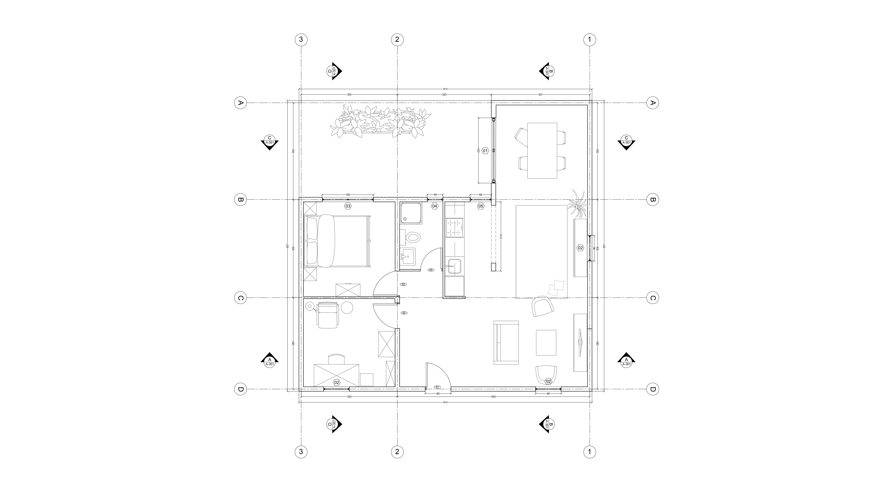
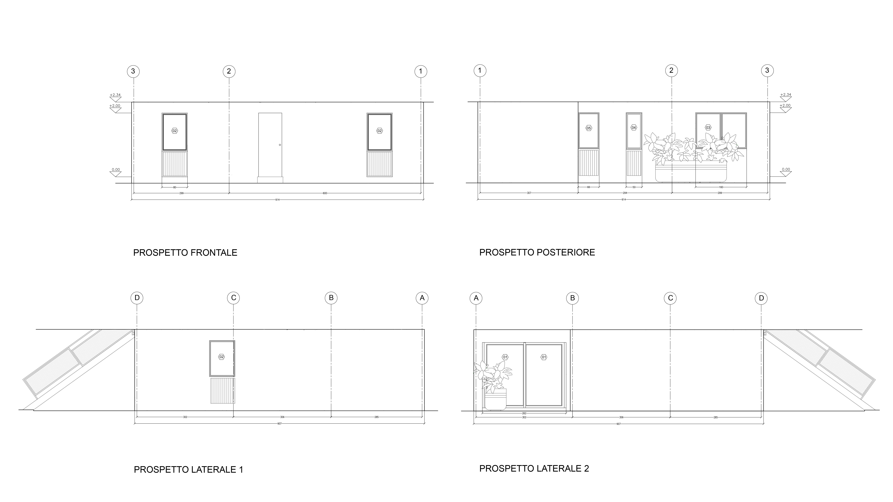
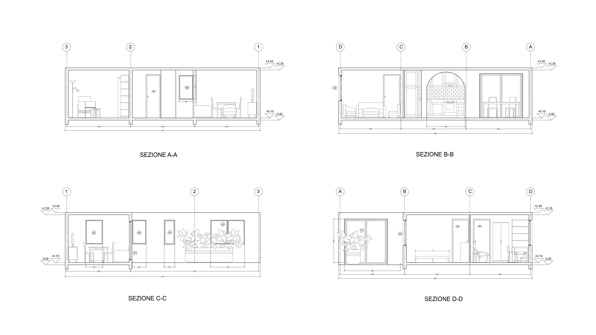

QM-S_1
Quinta Monroy
Ichique, Chile, 2004
Elemental Chile

Il progetto abitativo ELEMENTAL realizzato dall'architetto Alejandro Aravena è una strategia di appropriazione del territorio che permette molteplici tattiche abitative differenti, evitando un ruolo predittivo e prescrittivo, ma anti lasciandosi manipolare dai suoi abitanti indifferente alla permanenza della propria forma. Il nostro compito è stato quello di riqualificare, ampliando e modificando, la situazione preesistente. Il complesso abitativo si articola in case modulari per venire incontro alle esigenze dei vari nuclei familiari.
L'oggetto del nostro studio, Quinta Monroy-Simplex è una tipologia abitativa situata al piano terreno della struttura, nella quale abbiamo progettato un soggiorno molto ampio con cucina a vista e affaccio sul giardino, un bagno, uno studio e una camera da letto padronale.
L'abitazione nel nostro caso è stata pensata per una coppia. Abbiamo deciso di ampliare la zona giorno, permettendo così una relazione diretta con l'esterno non tralasciando l'idea di privacy e intimità. Infatti l'affaccio dà sul giardino interno, creando una coesistenza tra spazio pubblico e privato.
Gruppo QM-S_1
Alloggio Simplex
Proposta di Ampliamento
Pianta alloggio simplex scala 1:50
Prospetti alloggio simplex scala 1:50
Sezioni alloggio simplex scala 1:50
Descrizione Ambienti
Successivamente ogni componente del gruppo si è dedicato alla descrizione di tre ambienti dell'alloggio.
Producendo descrizioni dell'ambiente evocative e disegni esecutivi dei singoli componenti dell'ambiente.
- Qui di seguito i progetti individuali
- Ambiente Cucina by Aisia Bottari.
- Ambiente Camera by Federica Mansueto.
- Ambiente Studio by Isabella Ruina.